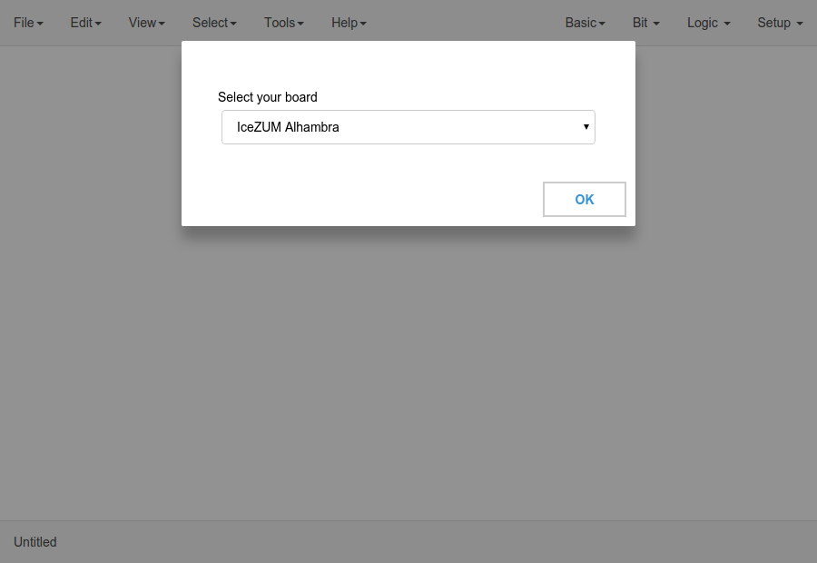
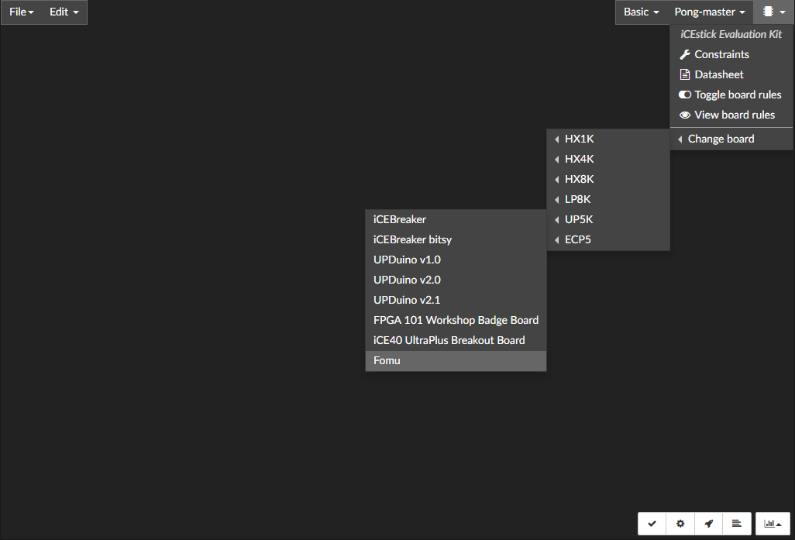
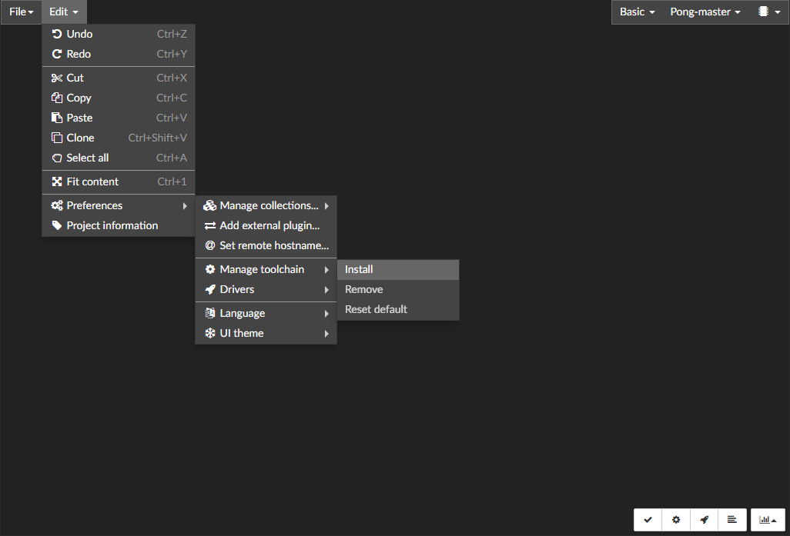
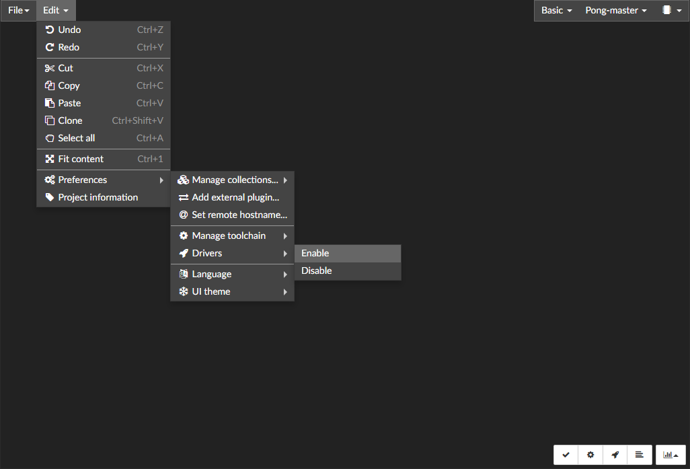
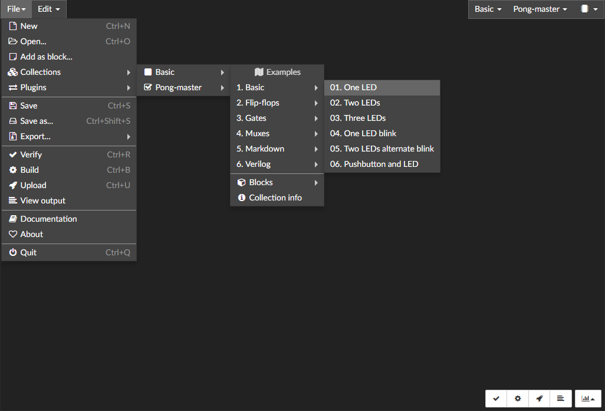
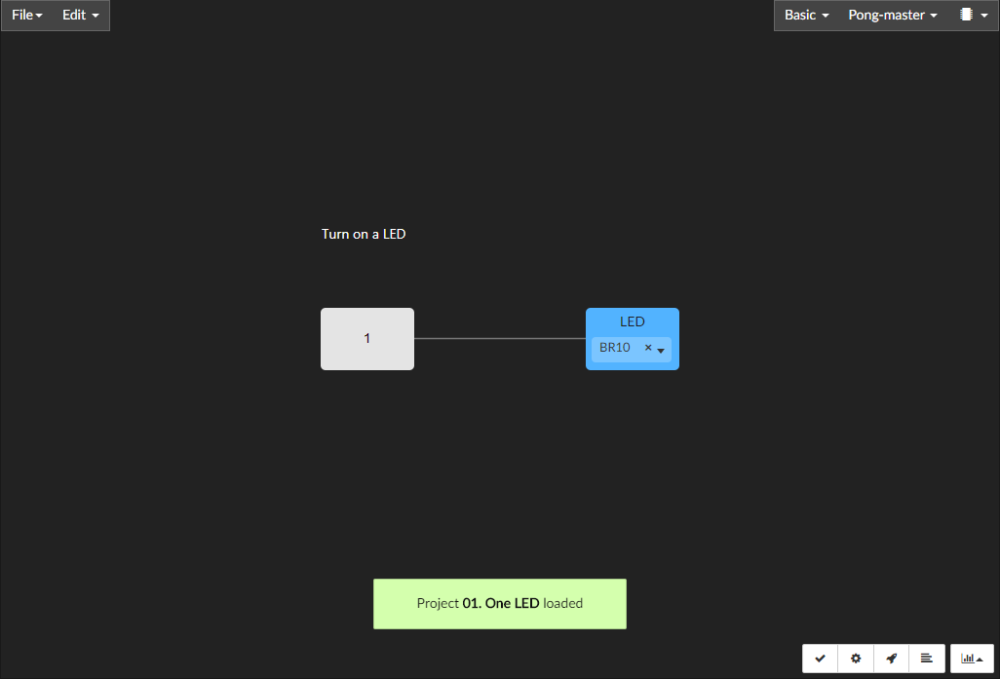
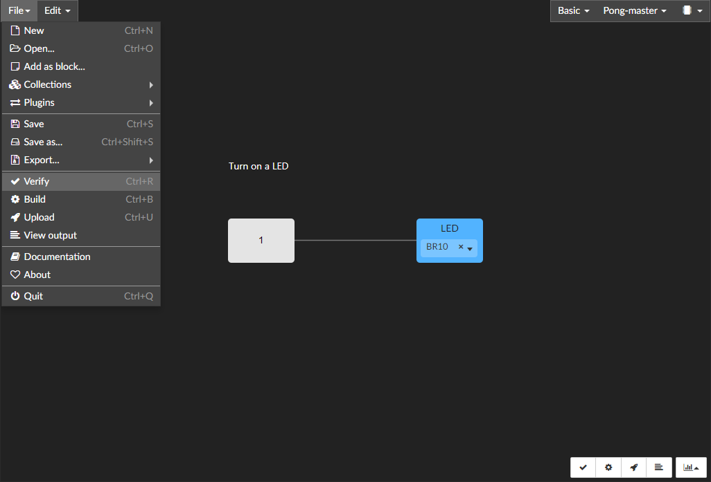
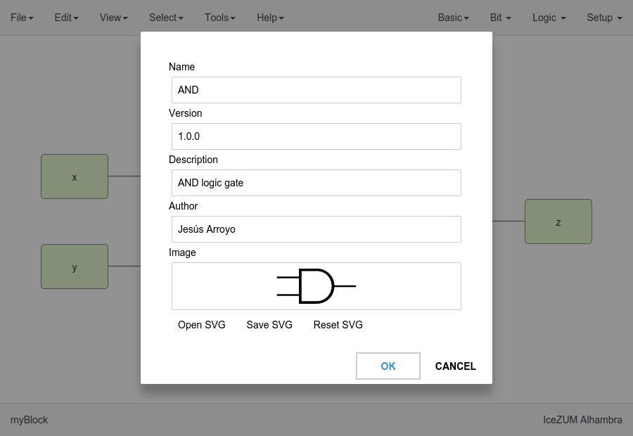

Quick Start¶
The first time Icestudio is executed, a board needs to be selected:
{kind=link}
A microchip icon on the top right corner provides access to board details, such as the pinout, the datasheet or implementation constraints. The selected board can be changed from the same menu:
{kind=link}
For configuring the built-in toolchain of custom statically built binaries, go to Edit > Preferences > Manage toolchain > Install:
{kind=link}
A cached release of Apio and all its needed packages will be installed.
Then, for configuring drivers, connect your board and select Edit > Preferences > Drivers > Enable. This operation requires administrator privileges.
{kind=link}
Note
On Windows, an external application (Zadig) is used. It replaces the existing FTDI driver of the Interface 0 with libusbK.

On macOS, this operation requires internet connection to allow Homebrew to install libffi and libftdi packages.
After doing the initial setup, go to File > Collections > Basic > 1. Basic > 01. One LED
 {kind=link}
{kind=link}
Last, the design can be verified, built or uploaded through the buttons on the bottom right corner, or from menu File:
{kind=link}
Project¶
An Icestudio project is a JSON file that fulfills the format described in ICE format. ICE files contain the whole design, along with metadata about the project. Menu option Edit > Project information allows to easily modify the metadata:
{kind=link}